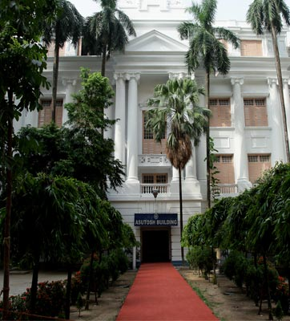
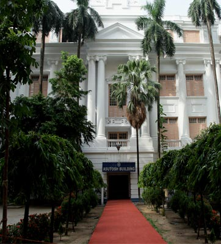

Calcutta University Library –An Eventful Journey
Although the University of Calcutta was formally launched in 1857, it had no permanent building of its own, at least in the early years. It might be recalled that the University was initially authorized only to hold examinations and award degrees. In those rudimentary stages of its growth, library, museum and other common facilities did not receive as much attention as they deserved. It was only after the University got a permanent home of its own in 1872 that attempts were initiated for the setting up of a library. Its nucleus was formed out of a small gift of Rs. 5000 by Joykrishna Mukherjee, the public spirited Zamindar of Uttarpara. While donating the money in 1869, he expressed the hope that a small library could be set up by the University. At about the same time Esan Chandra Ghose donated a small collection of books to the University. These efforts marked a small but auspicious beginning towards the setting up of the Calcutta University Library..
n 1886, a new Assistant was taken in for the Library and was given the designation of Assistant Librarian but the Registrar continued to be responsible for the administration of the Library. In 1912, the Government of India contributed one lakh of rupees for the building up of the library stock and agreed to place the University Library on its distribution list for the free supply of all Government publications. In 1913, Sir Asutosh Mookerjee, the then Vice-Chancellor of the Calcutta University, acknowledging the contribution made by the Government of India remarked “the improvements in the Library have been rendered practicable by means of the funds placed at the disposal of the University by the Government of India.”
Calcutta University Library : Growth and Expansion
The Calcutta University Library was originally meant for the use of the Resident Fellows only, although permissions were granted from time to time to bonafide research workers to use the Library. Later on, rules governing the use of the Library were revised and included Resident Registered Graduates and University teachers and scholars as well. When the Post-Graduate Department was opened in 1917, the establishment of a lending section for the use of the students was considered essential and the first disbursement on account of books and periodicals was made as follows:- Rs. 18,048 (Arts) and Rs. 8,393 (Science).
The immense popularity of the University Library is testified by its steady growth in the number of users. At present on an average one thousand users use the Central Library facilities. In order to promote awareness about the Library among its various stakeholders, the University Library organises exhibitions on various subjects on a regular basis.
 
